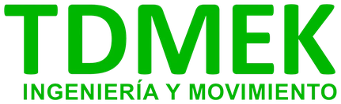

01
Qué incluye
- Diseño estructural en concreto y acero
- Estudios de suelos y geotecnia aplicada
- Obra civil integral y acabados
- Interventoría técnica y administrativa
- Licencias, permisos y supervisión continua
Siete líneas de trabajo en el Eje Cafetero: diseño estructural, seguridad electrónica, telecomunicaciones, energía RETIE, software a medida e inteligencia artificial, proyectos integrales e instalaciones deportivas. Cada etapa cierra con un entregable concreto, una prueba medible y un acta firmada.
La mayoría de los proyectos se rompen en las costuras: el civil culpa al eléctrico, el eléctrico al de redes y nadie responde por el conjunto. Fundaserinco integra las siete líneas bajo un mismo alcance cerrado, con un interlocutor técnico y legal. Recorre el ecosistema para ver qué resuelve cada frente.
Infraestructura segura: diseño estructural, estudios de suelos, obra civil e interventoría, con memorias de cálculo y pruebas de resistencia al cierre.
Ver ficha completaInfraestructura segura, diseño estructural, estudios de suelos y obra civil con interventoría. El cálculo se entrega firmado y la resistencia se comprueba con ensayos de laboratorio, no con una promesa.
Delimitación estricta de alcance y exclusiones, más pruebas documentadas en campo:
Protección y control con CCTV, control de acceso, alarmas y monitoreo remoto. Cada cámara y cada sensor queda probado en acta: encuadre, grabación, retención y acceso configurado.
Comprobación punto por punto, equipo por equipo:
Cableado estructurado Cat 6/6A, fibra óptica, WiFi empresarial y telefonía IP. Sin certificado por punto no hay red entregada: cada enlace sale con su medición de longitud, atenuación y diafonía.
Instrumentación calibrada y resultados entregables:
Instalaciones eléctricas residenciales, comerciales e industriales con tableros, puesta a tierra y certificación RETIE ante organismo acreditado ONAC. El dictamen no lo firma quien instaló: lo firma un tercero.
Mediciones con instrumentos calibrados y dictamen externo:
Landing pages de alto rendimiento, web apps con roles y base de datos, sistemas de gestión y APIs. Se entrega el código en repositorio, con pruebas de aceptación, auditoría OWASP y despliegue automatizado.
Pruebas medibles antes de dar por cerrado el proyecto:
Coordinación multidisciplinaria con un solo responsable: civil, eléctrico, telecom y seguridad llave en mano. Un cronograma, una matriz de riesgos y una sola acta de entrega con todo el dossier.
Control de gestión y comisionamiento antes de entregar:
Canchas sintéticas, cerramientos, alumbrado deportivo y dotación especializada. La superficie se mide, no se describe: drenaje, planimetría, rebote e iluminación comparados contra el estándar.
Ensayos en sitio sobre la obra terminada:
Cada etapa termina en un entregable concreto que se puede revisar y aprobar. Nada avanza sin que el anterior esté demostrado por escrito.
Levantamos información, revisamos antecedentes y definimos el alcance real del proyecto.
Propuesta técnica, especificaciones, cantidades y cronograma con precios y condiciones claras.
Construimos, instalamos o desarrollamos con dirección técnica y reportes periódicos de avance.
Mediciones, informes, planos as-built y certificaciones independientes cuando aplica.
Cierre formal con pólizas de estabilidad, manuales y línea de soporte post-entrega.
Cámara de comercio, RUT, matrícula profesional y pólizas vigentes verificables en los registros públicos.
Lo que se incluye, lo que no y con qué cantidades. Es la verificación que evita sobrecostos en obra.
Mediciones, actas y registro fotográfico de cada componente entregado, con fecha y responsable.
Garantía de equipos, de mano de obra y póliza de estabilidad separadas y con plazo explícito.
Dictamen RETIE ante organismo acreditado ONAC cuando la actividad lo exige por ley.
Línea de atención, tiempos de respuesta comprometidos y plan de mantenimiento preventivo.
Nueve proyectos reales en producción: gemelos digitales, configuradores 3D, asistentes de IA y paneles operativos. Cada tarjeta abre el sitio desplegado; pasa el cursor (o toca la tarjeta en móvil) para ver la captura real.
9 de 9 proyectos
Escena 3D interactiva de un invernadero con telemetría en vivo, control automático de clima, riego y energía, y escenarios de estrés: tormenta, ola de calor y corte de luz.
Muestra · Plan Élite Ver proyecto →Asistente desplegado que responde con el manual técnico cargado, cotiza repuestos del catálogo y agenda el taller por WhatsApp, con panel de administración.
Tienda con configuradores en tiempo real para marcas de ganado, herrajes forjados y accesorios: el cliente arma el hierro, lo gira y lo cotiza en el navegador.
Muestra · Plan Élite Ver proyecto →Configurador por piezas con malla interactiva a 360°, selección de materiales y color en tiempo real, y ficha técnica por componente.
Muestra · Plan Élite Ver proyecto →Navegación entre disciplinas con transiciones en video, dossier técnico lateral y lectura por capítulos sobre una retícula orbital.
Muestra · Plan Intermedio Ver proyecto →Portal de servicios con recorrido en video, fichas normativas por línea de trabajo, estimador de inversión y catálogo de entregables.
Muestra · Plan Intermedio Ver proyecto →Escaparate de cosmética con ficha técnica, selector de moneda, narrativa de marca y lectura de producto en primer plano.
Muestra · Plan Intermedio Ver proyecto →Inventario, eventos y movimientos en una sola vista, con indicadores en tiempo real y exportación de datos.
Muestra · Plan Esencial Ver proyecto →Panel de monitoreo con uptime por servicio, alertas por severidad, MTRR e incidentes, y seguimiento del SLA en vivo.
Muestra · Plan Esencial Ver proyecto →Cuando un proyecto pide una especialidad que no es la nuestra, se trabaja con un aliado técnico y se dice desde el principio. Estos son los equipos con los que ya se han ejecutado obras, redes y despliegues.

Tenken
TDMek¿Tienes una empresa de ingeniería o tecnología y quieres sumar tu especialidad a un proyecto? Hablemos de la alianza →
Si no está en la lista de servicios, lo evaluamos y te decimos con claridad si podemos resolverlo. La primera conversación no tiene costo y termina en un alcance por escrito.